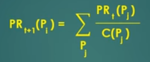

Calculating the PR of one page depends on the PRs of the pages linking to this page, but we don't know the PR of any page.
Thus, we assign an initial rank and then repeatedly use this iterative formula until convergence:
PRt+1 (Pi) = PR of a page (let's say "A") in next iteration
PRt (Pj) = current PR of page linking to "A"
C(Pj) = number of outgoing links for page linking to "A"
Do this for all pages linking to "A"
PageRank algorithm determines the relevance of a page by examining the importance of pages linking to it.
The PRt (Pj) / C(Pj) basically represents the transferring of authority from the page linking to "A" (in this case "C" since it's the only page with a link to "A") to "A"
e.g. one component when calculating the PR of "B" is PR(A) / 2 [Because "A" has two outgoing links, it is passing on 1/2 of its importance to "B"]
Note: The page rank of a website does not just depend on the number of pages linking to it; it also depends on the importance of the pages linking to this website. Thus, even if you create many pages linking to your site, your site won't have a drastically higher page rank since the many pages you just created don't have high importance.